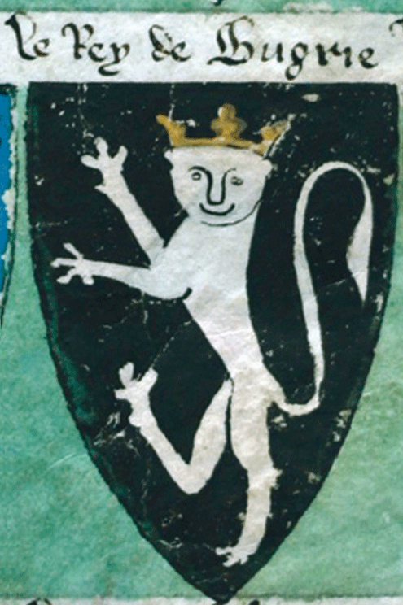

ГЕРБ |
Гербът на България е изправен златен коронован лъв на тъмночервено поле, обърнат на дясна хералдическа страна, поставен върху щит. От двете му страни има изобразени лъвове-щитодръжци, а над него – царска корона. Под щита има постамент от дъбови клонки със златни плодове и девизна лента с трикольорен кант, на която има изписан националният девиз „Съединението прави силата“. Настоящият герб е одобрен от Народното събрание през 1997 година. Това е първият герб на България след края на социалистическото управление в края на 80-те години. Точният вид на герба е предмет на продължителни спорове между политическите партии. Гербът на Република България се определя със Закона за герба на Република България, според който той е държавен символ, който изразява независимостта и суверенитета на българския народ и българската държава.
>|  Ок. 1295. Герб на краля на България, Гербовник на Лорд Маршал |
Ок. 1370 – 95. Герб на императора на България, Гелдренски гербовник |
1370 – 1395. Герб на цар Иван Асен II, Гелдренски гербовник |
1483. Герб на императора на България, Общ гербовник, Берлински кодекс, Конрад фон Грюненберг |
| 1595. Герб на България – Загребски кодекс, Гербовник на Кориенич-Неорич |
1602 – 04. Герб на императора на България, Гербовник на Конрад фон Грюненбер |
1602 – 04. Герб на херцога на България със столица Бдин / Видин, Общ гербовник, Мюнхенски кодекс, Конрад фон Грюненберг |
Началото на XVII век. Герб на България, Моденски гербовник |
| Ок. 1688. Герб на България, Знаци и гербове, Янез В. Валвасор |
1701. Герб на България – „Стематография“, Павел Ритер-Витезович |
1746. Герб на България – „Стематография“, Христофор Жефарович |
1844. Герб на България – „Царственик“, Христаки Павлович |
| гербове на последните български владетели Фружин и Константин II Асен от Bayerische Staatsbibliothek, München |
Вариант, предположен и тиражиран от „Всемирная иллюстрация“, 1879/No 558 |
1881 – 1927. Държавен герб |
1948. Герб на Народна република България |